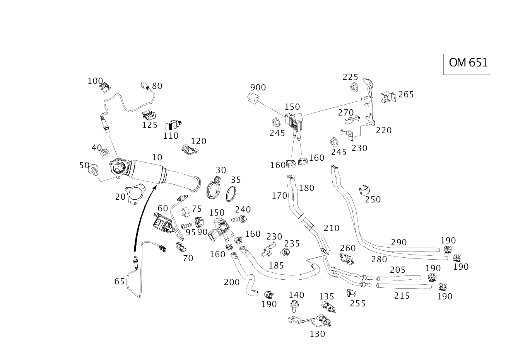

| № | Артикул | Название | Кол. | Примечание |
|---|---|---|---|---|
| 10 | A 246 490 13 10 | Трубка выпуска ОГ (EXHAUST GAS LINE) | 1 | Спереди |
| 10 | A 246 490 15 10 | Трубка выпуска ОГ (EXHAUST GAS LINE) | 1 | Спереди |
| 10 | A 246 490 15 10 | Трубка выпуска ОГ (EXHAUST GAS LINE) | 1 | Спереди |
| 20 | A 219 492 00 80 | Прокладка фланца (FLANGE SEAL) | 1 | Спереди |
| 20 | A 246 492 00 00 | Прокладка фланца (FLANGE SEAL) | 1 | Спереди |
| 30 | A 203 490 06 41 | Трубн. хомут сист.вып. ОГ (PIPE CLAMP, EXHAUST SYS.) | 1 | Трубопровод ОГ к выпускной трубе спереди |
| 30 | A 203 490 06 41 | Трубн. хомут сист.вып. ОГ (PIPE CLAMP, EXHAUST SYS.) | 1 | ПЕРЕД САЖЕВЫМ ФИЛЬТРОМ |
| 30 | A 000 995 34 33 | Проф. хомут сист. вып. ОГ (PROFILE CLAMP, EXH. SYS.) | 1 | Выпускная труба спереди к выпускной трубе сзади |
| 30 | A 000 995 14 33 | Проф. хомут сист. вып. ОГ (PROFILE CLAMP, EXH. SYS.) | 1 | Выпускная труба спереди к выпускной трубе сзади |
| 30 | A 000 995 21 33 | Проф. хомут сист. вып. ОГ (PROFILE CLAMP, EXH. SYS.) | 1 | Выпускная труба спереди к выпускной трубе сзади |
| 30 | A 000 995 30 33 | Проф. хомут сист. вып. ОГ (PROFILE CLAMP, EXH. SYS.) | 1 | Выпускная труба спереди к выпускной трубе сзади |
| 35 | A 220 492 02 81 | Уплотнительное кольцо (SEALING RING) | 1 | ПЕРЕД САЖЕВЫМ ФИЛЬТРОМ |
| 40 | A 002 990 39 50 | Гайка с фланцем (HEXAGON NUT WITH FLANGE) | 2 | К катализатору |
| 50 | A 000 990 67 03 | Винт Torx External (HEXALOBULAR HEAD SCREW) | 1 | К катализатору; M8X20 |
| 60 | A 000 905 71 24 | Датчик NOx (NOX SENSOR) | 1 | К катализатору |
| 65 | A 007 542 16 18 | Лямбда-зонд (LAMBDA SENSOR) | 1 | Диагностический зонд после катализатора |
| 65 | A 000 542 43 04 | Лямбда-зонд (LAMBDA SENSOR) | 1 | ДАТЧИК ДИАГНОСТИКИ ЗА КАТАЛИЗАТОРОМ |
| 70 | A 220 546 18 43 | Держатель (HOLDER) | 1 | КРЕПЛЕНИЕ ПРОВОДА ЗОНДА |
| 75 | A 000 995 60 44 | Держатель хомута (CABLE STRAP HOLDER) | 1 | НА ЭКРАНИР. ЩИТКЕ; 6.5X12.8 MM |
| 80 | A 007 542 51 18 | Лямбда-зонд (LAMBDA SENSOR) | 1 | Регулирующий зонд перед катализатором |
| 80 | A 007 542 16 18 | Лямбда-зонд (LAMBDA SENSOR) | 1 | Регулирующий зонд перед катализатором |
| 90 | A 000 998 49 85 | Дюбель (DOWEL) | 2 | КРЕПЛЕНИЕ БЛОКА УПРАВЛЕНИЯ СИСТЕМЫ НЕЙТРАЛИЗАЦИИ NOX |
| 95 | N 000000 004679 | Винт с плоск.гол. (PAN HEAD SCREW) | 2 | КРЕПЛЕНИЕ БЛОКА УПРАВЛЕНИЯ СИСТЕМЫ НЕЙТРАЛИЗАЦИИ NOX; 4X20 |
| 100 | A 000 541 01 40 | Держатель (HOLDER) | 1 | Крепление провода зонда; 18 X 24 MM |
| 100 | A 000 541 01 40 | Держатель (HOLDER) | 2 | Крепление провода зонда; 18 X 24 MM |
| 100 | A 000 541 01 40 | Держатель (HOLDER) | 1 | Крепление провода зонда; 18 X 24 MM |
| 100 | A 168 546 13 43 | Держатель (HOLDER) | 1 | Крепление провода зонда |
| 100 | A 000 546 20 75 | хомут (CLAMP) | 2 | ЛЯМБДА-ЗОНД; 18.0X18.5 MM |
| 100 | A 000 546 24 75 | Клемма кабеля (CABLE CLAMP) | 2 | Лямбда-зонд |
| 110 | A 001 995 15 44 | хомут (CLAMP) | 1 | К кронштейну крепления кабеля |
| 120 | A 000 546 20 75 | хомут (CLAMP) | 1 | Крепление провода зонда; 18.0X18.5 MM |
| 125 | A 000 541 01 40 | Держатель (HOLDER) | 2 | Лямбда-зонд; 18 X 24 MM |
| 125 | A 642 151 01 40 | Держатель (HOLDER) | 1 | Лямбда-зонд |
| 125 | A 000 546 24 75 | Клемма кабеля (CABLE CLAMP) | 2 | Лямбда-зонд |
| 150 | A 642 905 02 00 | Датчик давления (PRESSURE SENSOR) | 1 | Дифференциальный датчик давления сажевого фильтра 112 KPA |
| 150 | A 000 905 65 03 | Датчик давления (PRESSURE SENSOR) | 1 | ДИФФЕРЕНЦИАЛЬНЫЙ ДАТЧИК ДАВЛЕНИЯ САЖЕВОГО ФИЛЬТРА |
| 150 | A 007 153 60 28 | Датчик давления (PRESSURE SENSOR) | 1 | Дифференциальный датчик давления, низкое давление 17 KPA |
| 160 | A 140 995 04 05 | Пружинный хомут (SPRING HOSE CLAMP) | 2 | Шланг к датчику давления; 14/12 MM |
| 160 | A 140 995 04 05 | Пружинный хомут (SPRING HOSE CLAMP) | 7 | Шланг к датчику давления; 14/12 MM |
| 160 | A 006 997 18 90 | Хомут для шланга (HOSE CLAMP) | 7 | Шланг к датчику давления; 13-14.5 MM |
| 160 | A 140 995 04 05 | Пружинный хомут (SPRING HOSE CLAMP) | 2 | Шланг к датчику давления; 14/12 MM |
| 170 | A 246 492 03 59 | Шланг выпускной системы (EXHAUST GAS HOSE) | 1 | Длинный |
| 180 | A 246 492 04 59 | Шланг выпускной системы (EXHAUST GAS HOSE) | 1 | Короткое исполнение |
| 185 | A 246 492 08 59 | Шланг выпускной системы (EXHAUST GAS HOSE) | 1 | Короткое исполнение |
| 190 | A 140 995 04 05 | Пружинный хомут (SPRING HOSE CLAMP) | 7 | Шланг к датчику давления; 14/12 MM |
| 190 | A 140 995 04 05 | Пружинный хомут (SPRING HOSE CLAMP) | 2 | Шланг к датчику давления; 14/12 MM |
| 190 | A 004 997 20 90 | Хомут для шланга (HOSE CLAMP) | 2 | Шланг к датчику давления; 14.5-15.5 MM |
| 190 | A 004 997 20 90 | Хомут для шланга (HOSE CLAMP) | 2 | Шланг к датчику давления; 14.5-15.5 MM |
| 200 | A 246 492 13 59 | Шланг выпускной системы (EXHAUST GAS HOSE) | 1 | Спереди |
| 200 | A 246 492 12 59 | Шланг выпускной системы (EXHAUST GAS HOSE) | 1 | Спереди |
| 205 | A 246 492 06 59 | Шланг выпускной системы (EXHAUST GAS HOSE) | 1 | Сзади |
| 205 | A 246 492 02 00 | Шланг выпускной системы (EXHAUST GAS HOSE) | 1 | СЗАДИ |
| 210 | A 246 491 12 37 | Напорный трубопровод (PRESSURE LINE) | 1 | Длинный, после сажевого фильтра |
| 210 | A 246 491 39 00 | Напорный трубопровод (PRESSURE LINE) | 1 | ДЛИН., ЗА САЖЕВЫМ ФИЛЬТРОМ |
| 215 | A 246 492 07 59 | Шланг выпускной системы (EXHAUST GAS HOSE) | 1 | Короткое исполнение |
| 215 | A 246 492 03 00 | Шланг выпускной системы (EXHAUST GAS HOSE) | 1 | КОРОТКИЙ |
| 220 | A 246 490 08 40 | Держатель (HOLDER) | 1 | ДАТЧИК ДАВЛЕНИЯ |
| 225 | A 000 990 43 37 | Шестигранная гайка (HEXAGON NUT) | 1 | КРЕПЛЕНИЕ КРОНШТЕЙНА; M6 |
| 230 | A 246 492 06 41 | Держатель (HOLDER) | 1 | К двигателю |
| 235 | N 910143 006000 | Винт с 6-гр. глвк (HEXALOBULAR SCREW) | 1 | Держатель к держателю; M6X12 |
| 240 | A 000 990 43 37 | Шестигранная гайка (HEXAGON NUT) | 1 | Крепление датчика давления; M6 |
| 240 | N 910143 006004 | Винт с 6-гр. глвк (HEXALOBULAR SCREW) | 1 | Крепление датчика давления; M6X30 |
| 240 | N 910143 006004 | Винт с 6-гр. глвк (HEXALOBULAR SCREW) | 1 | Крепление датчика давления; M6X30 |
| 245 | A 000 990 43 37 | Шестигранная гайка (HEXAGON NUT) | 1 | Крепление датчика давления; M6 |
| 245 | N 910143 006004 | Винт с 6-гр. глвк (HEXALOBULAR SCREW) | 1 | Крепление датчика давления; M6X30 |
| 245 | A 000 990 43 37 | Шестигранная гайка (HEXAGON NUT) | 2 | Датчик давления к кронштейну; M6 |
| 245 | A 000 990 43 37 | Шестигранная гайка (HEXAGON NUT) | 1 | Датчик давления к кронштейну; M6 |
| 250 | A 012 988 07 78 | Скоба (CLAMP) | 2 | Крепление проводов |
| 255 | A 000 988 18 78 | Скоба (CLAMP) | 1 | Крепление проводов |
| 260 | A 168 546 13 43 | Держатель (HOLDER) | 1 | КРОНШТЕЙН КАБЕЛЯ |
| 265 | A 002 991 27 70 | Скоба (CLAMP) | 1 | КРЕПЛЕНИЕ ПРОВОДА ДАТЧИКА КИСЛОРОДА |
| 265 | A 002 991 27 70 | Скоба (CLAMP) | 1 | КРЕПЛЕНИЕ ПРОВОДА ДАТЧИКА КИСЛОРОДА |
| 270 | A 000 995 40 68 | Клемма кабеля (CABLE CLAMP) | 1 | ТРУБОПРОВОД К КРОНШТЕЙНУ |
| 280 | A 246 492 01 59 | Шланг выпускной системы (EXHAUST GAS HOSE) | 1 | Длинный |
| 290 | A 246 492 00 59 | Шланг выпускной системы (EXHAUST GAS HOSE) | 1 | Короткое исполнение |
| 300 | A 246 490 51 00 | Система выпуска ОГ (EXHAUST SYSTEM) | 1 | В центре, без заслонки выпускного тракта |
| 300 | A 246 490 17 20 | Трубка выпуска ОГ (EXHAUST GAS LINE) | 1 | Посередине |
| 300 | A 176 490 04 81 | Система выпуска ОГ (EXHAUST SYSTEM) | 1 | СЕРЕДИНА |
| 300 | A 246 490 38 20 | Трубка выпуска ОГ (EXHAUST GAS LINE) | 1 | Посередине |
| 300 | A 246 490 63 81 | Система выпуска ОГ (EXHAUST SYSTEM) | 1 | Посередине |
| 310 | A 000 995 12 33 | Проф. хомут сист. вып. ОГ (PROFILE CLAMP, EXH. SYS.) | 1 | ПЕРЕДНЯЯ ВЫПУСКНАЯ ТРУБА К ЗАДНЕЙ ВЫПУСКНОЙ ТРУБЕ |
| 310 | A 000 995 47 02 | Трубн. хомут сист.вып. ОГ (PIPE CLAMP, EXHAUST SYS.) | 1 | ПЕРЕДНЯЯ ВЫПУСКНАЯ ТРУБА К ЗАДНЕЙ ВЫПУСКНОЙ ТРУБЕ; Ø 65 MM |
| 315 | A 000 995 47 02 | Трубн. хомут сист.вып. ОГ (PIPE CLAMP, EXHAUST SYS.) | 1 | ВЫХЛОП. ТРУБА ЦЕНТР. НА ВЫХЛОП. ТРУБЕ СЗАДИ; Ø 65 MM |
| 320 | A 246 491 34 00 | Напорный трубопровод (PRESSURE LINE) | 1 | Короткое исполнение, перед сажевым фильтром |
| 320 | A 246 491 11 37 | Напорный трубопровод (PRESSURE LINE) | 1 | Короткое исполнение, перед сажевым фильтром |
| 330 | A 246 491 35 00 | Напорный трубопровод (PRESSURE LINE) | 1 | Длинный, после сажевого фильтра |
| 330 | A 246 491 10 37 | Напорный трубопровод (PRESSURE LINE) | 1 | Длинный, после сажевого фильтра |
| 340 | N 910143 006001 | Винт с 6-гр. глвк (HEXALOBULAR SCREW) | 1 | КРЕПЛЕНИЕ НАПОРНОЙ ТРУБКИ; M6X16 |
| 350 | A 246 490 00 40 | Держатель (HOLDER) | 1 | Подвеска выпускной системы спереди |
| 360 | N 000000 003175 | Гайка (NUT) | 2 | Выпускная труба к кронштейну; M8 |
| 370 | A 000 905 07 01 | Датчик температуры (TEMPERATURE SENSOR) | 1 | Перед сажевым фильтром |
| 370 | A 000 905 81 05 | Датчик температуры (TEMPERATURE SENSOR) | 1 | Перед сажевым фильтром |
| 370 | A 000 905 91 05 | Датчик температуры (TEMPERATURE SENSOR) | 1 | Перед сажевым фильтром |
| 375 | A 008 153 41 28 | Датчик температуры (TEMPERATURE SENSOR) | 1 | Датчик температуры перед каталитическим нейтрализатором ОГ системы SCR |
| 377 | A 000 905 85 01 | Датчик температуры (TEMPERATURE SENSOR) | 1 | Датчик температуры перед катализатором |
| 380 | A 000 546 24 75 | Клемма кабеля (CABLE CLAMP) | 1 | Крепление провода датчика температуры |
| 390 | A 168 546 13 43 | Держатель (HOLDER) | 1 | Крепление провода датчика температуры |
| 390 | A 000 988 18 78 | Скоба (CLAMP) | 1 | Крепление провода датчика температуры |
| 395 | A 012 988 14 78 | Крепежная скоба (FASTENING CLIP) | 3 | Крепление провода зонда |
| 400 | A 168 492 01 44 | Подвесное кольцо (SUSPENSION RING) | 1 | Выпускная система посередине |
| 410 | A 246 492 06 41 | Держатель (HOLDER) | 1 | Шланг выпускной системы |
| 420 | A 246 490 16 10 | Трубка выпуска ОГ (EXHAUST GAS LINE) | 1 | Трубопровод рециркуляции ОГ на впускном коллекторе |
| 420 | A 246 490 23 00 | Трубопровод ОГ пер. (EXHAUST GAS LINE, FRONT) | 1 | Трубопровод рециркуляции ОГ на впускном коллекторе |
| 420 | A 246 490 64 00 | Трубопровод ОГ пер. (EXHAUST GAS LINE, FRONT) | 1 | ТРУБОПР. РЕЦИРКУЛ. НА ВПУСК. КОЛЛЕКТ. |
| 425 | A 246 490 19 10 | Трубка выпуска ОГ (EXHAUST GAS LINE) | 1 | Трубопровод рециркуляции ОГ к выпускной системе |
| 425 | A 246 490 21 00 | Трубопровод ОГ пер. (EXHAUST GAS LINE, FRONT) | 1 | Трубопровод рециркуляции ОГ к выпускной системе |
| 430 | A 651 142 14 80 | Металлическое уплотнение (METAL SEAL WITH BEAD) | 1 | Клапан рециркуляции ОГ к теплообменнику ОГ |
| 435 | N 910143 006001 | Винт с 6-гр. глвк (HEXALOBULAR SCREW) | 1 | НА ТРУБЕ РЕЦИРКУЛЯЦИИ ОГ; M6X16 |
| 436 | A 651 142 02 89 | фильтрующий элемент (FILTER BOWL) | 1 | |
| 440 | N 910143 006001 | Винт с 6-гр. глвк (HEXALOBULAR SCREW) | 2 | НА ТРУБЕ РЕЦИРКУЛЯЦИИ ОГ; M6X16 |
| 450 | A 000 995 42 33 | Профильный хомут цельный (PROFILE CLAMP, ONE-PIECE) | 2 | ТРУБКА РЕЦИРКУЛЯЦИИ ОГ |
| 460 | A 246 492 00 24 | Дроссельная заслонка (THROTTLE VALVE) | 1 | ПЕРЕДНЯЯ ВЫПУСКНАЯ ТРУБА К ЗАДНЕЙ ВЫПУСКНОЙ ТРУБЕ |
| 465 | A 000 906 12 01 | Регулятор засл.вып.тракт. (EXH. GAS FLAP CONTROLLER) | 1 | ДРОССЕЛЬНАЯ ЗАСЛОНКА |
| 470 | A 000 993 23 35 | Спиральная пружина (SPIRAL SPRING) | 1 | УПРАВЛЕНИЕ ЗАСЛОНКАМИ |
| 475 | A 000 990 61 37 | Винт с 6-гр. глвк (HEXALOBULAR SCREW) | 3 | СЕРВОМЕХАНИЗМ НА ДРОССЕЛЬНОЙ ЗАСЛОНКЕ; M6X16 |
| 480 | A 000 995 34 33 | Проф. хомут сист. вып. ОГ (PROFILE CLAMP, EXH. SYS.) | 2 | ТРУБОПРОВОД ОГ НА ВЫПУСКНОЙ ТРУБЕ СПЕРЕДИ |
| 520 | A 246 492 04 41 | Держатель (HOLDER) | 1 | Выпускная система посередине |
| 530 | N 000000 003853 | Винт с 6-гр. глвк (HEXALOBULAR SCREW) | 3 | Выпускная система к кузову; M8X16 |
| 540 | A 000 905 51 09 | Датчик сажевого фильтра (SOOT PARTICULATE SENSOR) | 1 | |
| 545 | A 212 546 35 43 | Держатель (HOLDER) | 1 | НА ДНИЩЕ |
| 550 | A 651 142 07 20 | Экран защитный (SCREENING PLATE) | 1 | К катализатору |
| 555 | A 000 990 36 62 | Пластмассовая гайка (PLASTIC NUT) | 2 | ДЕРЖАТЕЛЬ НА ДНИЩЕ |
| 560 | A 651 142 01 00 | Экран защитный (SCREENING PLATE) | 2 | ТЕПЛОЗАЩИТНЫЙ ЭКРАН НА КАТАЛИТИЧЕСКОМ НЕЙТРАЛИЗАТОРЕ ОГ |
| 565 | A 000 990 36 62 | Пластмассовая гайка (PLASTIC NUT) | 2 | ДЕРЖАТЕЛЬ НА САЖЕВОМ ФИЛЬТРЕ |
| 570 | A 651 142 08 20 | Экран защитный (SCREENING PLATE) | 1 | К выпускной трубе |
| 580 | A 651 142 00 00 | Экран защитный (SCREENING PLATE) | 2 | К выпускной трубе |
| 600 | A 246 490 15 20 | Трубка выпуска ОГ (EXHAUST GAS LINE) | 1 | СЗАДИ, БЕЗ ЗАСЛОНКИ ВЫПУСКНОГО ТРАКТА |
| 600 | A 246 490 16 20 | Трубка выпуска ОГ (EXHAUST GAS LINE) | 1 | СЗАДИ, БЕЗ ЗАСЛОНКИ ВЫПУСКНОГО ТРАКТА |
| 600 | A 246 490 49 20 | Трубка выпуска ОГ (EXHAUST GAS LINE) | 1 | СЗАДИ, БЕЗ ЗАСЛОНКИ ВЫПУСКНОГО ТРАКТА |
| 600 | A 246 490 43 81 | Система выпуска ОГ (EXHAUST SYSTEM) | 1 | СЗАДИ, БЕЗ ЗАСЛОНКИ ВЫПУСКНОГО ТРАКТА |
| 600 | A 246 490 89 81 | Система выпуска ОГ (EXHAUST SYSTEM) | 1 | СЗАДИ, БЕЗ ЗАСЛОНКИ ВЫПУСКНОГО ТРАКТА |
| 600 | A 246 490 87 81 | Система выпуска ОГ (EXHAUST SYSTEM) | 1 | Сзади, с заслонкой выпускного тракта |
| 600 | A 246 490 40 20 | Трубка выпуска ОГ (EXHAUST GAS LINE) | 1 | Сзади, с заслонкой выпускного тракта |
| 600 | A 246 490 64 81 | Система выпуска ОГ (EXHAUST SYSTEM) | 1 | Сзади, с заслонкой выпускного тракта |
| 600 | A 246 490 60 00 | Система выпуска ОГ (EXHAUST SYSTEM) | 1 | СЗАДИ |
| 600 | A 246 490 63 00 | Система выпуска ОГ (EXHAUST SYSTEM) | 1 | СЗАДИ |
| 610 | A 246 490 02 27 | Насадка выпускной трубы (TAILPIPE TRIM) | 1 | Слева |
| 610 | A 246 490 00 27 | Насадка выпускной трубы (TAILPIPE TRIM) | 1 | Справа |
| 615 | A 000 490 00 27 | Крепежные детали (FASTENING PARTS) | 1 | Насадка выпускной трубы слева |
| 615 | A 000 490 00 27 | Крепежные детали (FASTENING PARTS) | 1 | Насадка выпускной трубы справа |
| 620 | A 246 492 09 41 | Держатель (HOLDER) | 2 | Выпускная система сзади |
| 630 | A 231 492 00 44 | Подвес трубопровода ОГ (SUSPENSION, EXH. GAS LINE) | 2 | Сзади слева и справа |
| 670 | A 000 995 34 33 | Проф. хомут сист. вып. ОГ (PROFILE CLAMP, EXH. SYS.) | 1 | Выпускная труба спереди к выпускной трубе сзади |
| 670 | A 000 995 14 33 | Проф. хомут сист. вып. ОГ (PROFILE CLAMP, EXH. SYS.) | 1 | Выпускная труба спереди к выпускной трубе сзади |
| 670 | A 000 995 21 33 | Проф. хомут сист. вып. ОГ (PROFILE CLAMP, EXH. SYS.) | 1 | Выпускная труба спереди к выпускной трубе сзади |
| 670 | A 000 995 30 33 | Проф. хомут сист. вып. ОГ (PROFILE CLAMP, EXH. SYS.) | 1 | Выпускная труба спереди к выпускной трубе сзади |
| 710 | A 246 490 00 40 | Держатель (HOLDER) | 1 | Подвеска выпускной системы спереди |
| 725 | N 000000 003175 | Гайка (NUT) | 2 | Выпускная труба к кронштейну; M8 |
| 790 | A 246 490 02 27 | Насадка выпускной трубы (TAILPIPE TRIM) | 1 | Слева |
| 790 | A 246 490 00 27 | Насадка выпускной трубы (TAILPIPE TRIM) | 1 | Справа |
| 795 | A 000 490 00 27 | Крепежные детали (FASTENING PARTS) | 1 | Насадка выпускной трубы слева |
| 795 | A 000 490 00 27 | Крепежные детали (FASTENING PARTS) | 1 | Насадка выпускной трубы справа |
| 800 | A 246 492 04 41 | Держатель (HOLDER) | 1 | Выпускная система посередине |
| 810 | N 000000 003853 | Винт с 6-гр. глвк (HEXALOBULAR SCREW) | 3 | Выпускная система к кузову; M8X16 |
| 820 | A 168 492 01 44 | Подвесное кольцо (SUSPENSION RING) | 1 | Выпускная система посередине |
| 830 | A 246 492 09 41 | Держатель (HOLDER) | 2 | Выпускная система сзади |
| 840 | A 231 492 00 44 | Подвес трубопровода ОГ (SUSPENSION, EXH. GAS LINE) | 2 | Сзади слева и справа |
| 900 | A 027 545 09 26 | Картер сцепления (COUPLING HOUSING) | 1 | ДАТЧИК ДИФФЕРЕНЦИАЛЬНОГО ДАВЛЕНИЯ B28/17; 3-PIN SLK2.8 |
| 910 | A 032 545 69 26 | Картер сцепления (CLUTCH HOUSING) | 1 | ЗАСЛОНКА В ВЫПУСКНОЙ СИСТЕМЕ M16/53; 6-PIN |
| 920 | A 032 545 59 26 | Картер сцепления (CLUTCH HOUSING) | 1 | ДАТЧИК ТЕМПЕР. САЖ.ФИЛЬТРА B16/19; 2-PIN |
Позиций: 160 · подписано на схемах: 160 · колесо — плавный зум в курсор, перетаскивание — пан, двойной клик — зум, клик по артикулу — скопировать.